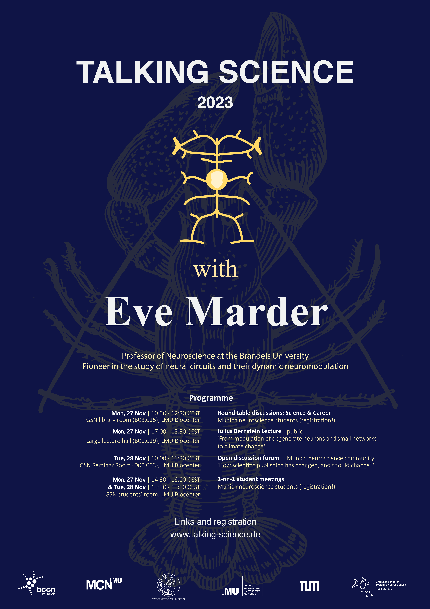

Talking Science with Eve Marder
Talking Science is a unique opportunity to meet and talk about neuroscience with a leading researcher in an informal atmosphere - a two-day program for the MSc and PhD students of LMU, TUM, and the MPIs.

About
This year's guest is Prof. Eve Marder (Victor and Gwendolyn Beinfield Professor of Neuroscience at Brandeis University).
Her work on neuromodulation, plasticity, and homeostasis in the lobster stomatogastric ganglion has been pivotal in bringing about a paradigm shift in the study of neural circuits towards treating them not merely as hard-wired systems with a fixed output, but as being capable of dynamically altering their input-output properties.
Moreover, she has helped pioneer the expansion of computational methods in conjunction with experimental neuroscience: together with Larry Abbott, she developed the dynamic clamp method, which allows researchers to introduce mathematically modelled synaptic or other conductances into biological neurons. Prof. Marder is the recipient of numerous prestigious awards, including the Kavli Prize in Neuroscience, the Gruber Prize in Neuroscience, and the National Academy of Sciences Award in the Neurosciences. In 2007, she was president of the Society for Neuroscience. She holds honorary doctorates from Princeton and Tel Aviv University.
The Talking Science program consists of two talks, open to the public, and two round table discussions on science and career, open to Munich neuroscience students. Additionally, Munich neuroscience students will have the opportunity to sign up for individual one-on-one meetings with Professor Marder. Sign up here!
Schedule
- Monday, 27.11.2023 at 10:00 - LMU Biocenter in Martinsried
- Roundtable discussion: science
This first round table discussion will give you an opportunity to ask questions regarding Prof. Marder's work, and will run into a more detailed discussion about the methods and discoveries in her research. Please sign up here! - Monday, 27.11.2023 at 11:30 - Martinsried
- Roundtable discussion: career
In this second round table discussion we will gain insights from Prof. Marder about her choices throughout her scientific career. Students can also take advantage of this forum to discuss the direciton of their own research and future plans.Please sign up here! - Monday, 27.11.2023 between 14:00 and 16.00 - LMU Biocenter Martinsried
- 1-on-1 student meetings
This is an opportunity for a personal meeting with Prof. Marder, in which you could discuss issues that directly relate to your own research. Each student will get a time slot of 20 mins. Please sign up, as the number of places is limited. - Monday, 27.11.2023 at 17:00 - large lecture hall (B00.019), LMU Biocenter in Martinsried
- Julius Bernstein Lecture: From modulation of degenerate neurons and small networks to climate change
This lecture is open to the general scientific community. - Monday, 27.11.2023 at 19.00 - location: tba
- Social Event: Dinner
We have very limited places available to invite students to a dinner with Prof. Marder. Please sign up here! - Tuesday, 28.11.2023 at 10:00 - GSN Seminar Room, D00.0003, LMU Biocenter in Martinsried
- Discussion forum: How scientific publishing has changed, and should change?
This discussion is open to the general scientific community. - Tuesday, 28.11.2023 at 12:00 Martinsried
- Social Event: Lunch
We have very limited places available to invite students to a dinner with Prof. Marder. Please sign up here! - Tuesday, 28.11.2023 13:30 - 14.30 - Martinsried
- 1-on-1 student meetings
This is an opportunity for a personal meeting with Prof. Marder, in which you could discuss issues that directly relate to your own research. Each student will get a time slot of 20 mins. Please sign up, as the number of places is limited.

Past speakers
- 2022
- Peter Dayan (Max Planck Institute for Biological Cybernetics)
- 2021
- Ilana Witten (Princeton University)
- 2019
- Adrienne Fairhall (U Washington)
- 2018
- Matteo Carandini (UCL)
- 2017
- Christof Koch (Allen Institute for Brain Science) - cancelled
- 2016
- Gina Turrigiano (Brandeis University)
- 2015
- Gilles Laurent (MPI for Brain Research)
- 2014
- Ed Boyden (MIT)
- 2013
- Larry Abbott (Columbia University)
- 2012
- Nikos Logothetis (MPI for Biological Cybernetics)
- 2011
- May-Britt Moser (Kavli Institute of Systems Neuroscience)
- 2010
- Karel Svoboda (Janelia Research Campus)
- 2009
- Markus Meister (Caltech)
Contact
Talking Science is made possible through the generous support of the Bernstein Center for Computational Neuroscience Munich and organized by:
- Dina von Werder (TUM)
- Lukas Meyer-Olbersleben (LMU)
- José Maria Martinez de Paz (MPI of Biological Intelligence)